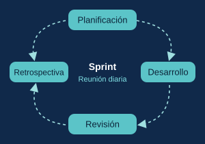
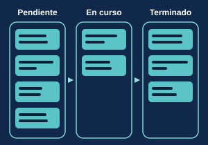
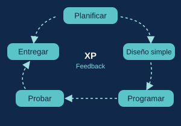

Las metodologías ágiles son formas de trabajar que valoran más a las personas y su interacción, la colaboración con el cliente y la respuesta al cambio. Nacieron en 2001, cuando 17 profesionales del software se reunieron y escribieron el Manifiesto Ágil.
Scrum
Scrum es un modelo ágil con equipos autogestionados. El producto se desarrolla por partes, en ciclos llamados sprints, que duran de una a seis semanas (se recomienda no más de un mes). En cada sprint hay planificación, reunión diaria de 5 a 15 minutos, revisión y retrospectiva. Sus roles son desarrollador, propietario del producto y scrum master.

El Sprint se repite: se planifica, se desarrolla, se revisa lo hecho y se mejora el equipo.
Kanban
Kanban es una técnica para manejar el trabajo de forma visual, con un flujo continuo y sin sprints. Las tareas se ubican en un tablero con columnas como pendiente, en curso y terminado. El tablero muestra el estado de cada tarea y ayuda a detectar cuellos de botella.

Las tareas pasan de pendiente a en curso y terminado, y el tablero muestra el estado de todo.
XP (Programación Extrema)
XP es una metodología ágil que explicó Kent Beck en su libro de 1999, y fue una de las que inspiró el Manifiesto Ágil. Se apoya en ciclos cortos, pruebas constantes y el feedback del cliente.

En XP se trabaja en ciclos cortos y el feedback del cliente alimenta cada vuelta.